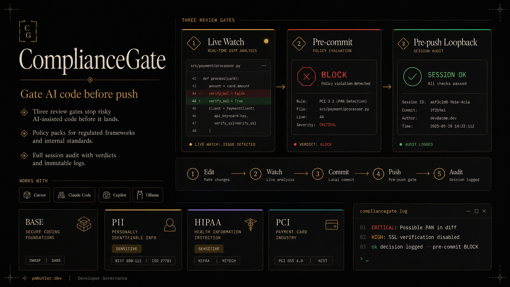

No audit trail
Chat history is not compliance evidence. You need decisions, severities, and overrides logged where your team can find them.
compliancegate.dev · Gilded Service
Live alerts while you type, a pre-commit block on critical findings, and a pre-push loopback of the full session. Decisions land in SQLite, markdown, or Postgres — you pick the retention mode.
Works with Cursor Claude Code Copilot Ollama OpenAI-compatible APIs

AI agents commit fast. PHI in a prompt, a PAN in a diff, an API key in a config file — and it is in git history before a human reviews the PR.
Chat history is not compliance evidence. You need decisions, severities, and overrides logged where your team can find them.
PR review finds the HIPAA violation after the branch is shared. The gate belongs at commit and push, not at merge.
HIPAA, PCI, and PII need different checks. Enable modular packs instead of a 200-page doc nobody reads.
AI or human changes land in your working tree.
Live alerts on critical and high findings.
Hook blocks on critical by default.
Loopback review of the full session.
SQLite, markdown, or remote DB.
Pattern scans for secrets, PAN, and PHI run locally even without an API key. When configured, an LLM reviews diffs with redaction before send.
Debounced file watcher flags findings while you code. Surfaces critical and high severity before you stage.
Reviews staged diff against enabled rule packs. Records allow or block with reasoning. Threshold: block_commit_on: critical.
Re-reviews accumulated session context before code leaves your machine. Threshold: block_push_on: high.
Each pack ships rules and heuristic patterns. Sensitive packs default to local-first retention.
Hardcoded credentials, auth changes, dependency risk. Enable in every repo.
Personal data in logs, storage, and source. Local retention recommended.
PHI in logs, prompts, and external LLM routing. Healthcare scope only.
Cardholder data never stored or logged. Never synced raw to remote DB.
Two layers on every review: heuristic patterns scan added diff lines locally; LLM rules evaluate policy when an API key or Ollama is configured. Inspect any pack from the CLI.
compliancegate rules list
compliancegate rules show pci
| Pack | Check | Layer | Severity | Blocks at |
|---|---|---|---|---|
base |
Possible hardcoded secret / credential leak | Heuristic | Critical | Commit |
base |
eval(), exec(), SSL verification disabled | Heuristic | High | Push |
base |
Auth changes need review note; no secrets in fixtures | LLM rule | Varies | Per finding |
pii |
SSN, email, phone, name/DOB field patterns | Heuristic | Critical – Medium | Per finding |
pii |
PII in logs, client storage, export endpoints | LLM rule | Varies | Per finding |
hipaa |
PHI/clinical field references in source | Heuristic | Medium | — |
hipaa |
PHI routed to external LLM (OpenAI, Anthropic, etc.) | Heuristic | Critical | Commit |
hipaa |
PHI encryption, BAAs, audit trail, minimum necessary | LLM rule | Varies | Per finding |
pci |
PAN, CVV, magnetic stripe / track data patterns | Heuristic | Critical | Commit |
pci |
No card data in URLs, logs, or shared credentials | LLM rule | Varies | Per finding |
Default thresholds: block_commit_on: critical, block_push_on: high. Sensitive pack findings stay local unless you set sync_sensitive_findings: true. These gates assist review — they are not a compliance certification.
Markdown audit trails written to .compliancegate/reports/ — not chat filler.
Set storage.mode in config.yaml. One switch, five destinations.
sqlite
Full detail in .compliancegate/data/compliancegate.db. Sessions, decisions, findings, raw review context.
sqlite_markdown
Default mode. SQLite plus session and daily markdown rollups for human-readable audit trails.
remote
Mirror metadata to your infrastructure. Sanitized by default — no diff prose or raw findings.
remote_payload: metadata_only by defaultInstall git hooks, scaffold config.yaml, and create storage directories for your chosen mode.
npx, install script, or manual pip. Hooks run on every commit and push.
Recommended. Creates a venv, pip installs ComplianceGate, writes config, and installs hooks.
npx compliancegate install
npx compliancegate check
Requires Node 18+ and Python 3.10+. Package scaffold — publish pending.
Creates venv, copies config, installs hooks, sets storage mode.
git clone https://github.com/tedrubin80/compliancegate.git && cd compliancegate && bash scripts/install.sh --repo /path/to/your/project
pip install -e /path/to/compliancegate && compliancegate init --mode sqlite_markdown
compliancegate watch
compliancegate skill for hooked repos; compliance-review for standalone review.
npx compliancegate skills install --all-skills
Install script also copies the CG skill to .cursor/skills/compliancegate/.
Edit config.yaml after init:
compliancegate rules list
Enable pii, hipaa, pci under compliance.rule_packs.
pip install 'compliancegate[postgres,mysql]'
Set CG_POSTGRES_URL and storage.mode: remote.
Logged when storage is enabled. Use sparingly.
CG_SKIP=1 git commit -m "hotfix"
LLM review: set OPENROUTER_API_KEY with provider: openrouter, or OPENAI_API_KEY / Ollama. Run compliancegate llm route to inspect. Alias: cg.
A governance gap layer for AI-assisted development. It watches file changes, gates commit and push with policy review, and writes an audit trail to storage you control.
No for basic use. Heuristic pattern scanning runs locally. For LLM review, use OpenAI, OpenRouter (recommended — one key, many models), or Ollama. Diffs are redacted before external send when redact_before_send: true.
Set provider: openrouter and OPENROUTER_API_KEY in config. Pick any OpenRouter model id (e.g. anthropic/claude-3.5-sonnet), optional fallback_models for automatic failover. Run compliancegate llm test to verify the route.
Not by default. Remote Postgres/MySQL sync uses metadata-only payloads. Full finding detail stays in local SQLite or markdown unless you explicitly change retention settings.
Yes. Open source on GitHub. You provide your own LLM API key if you want LLM review.
Five minutes to hooks, config, and your first reviewed commit.